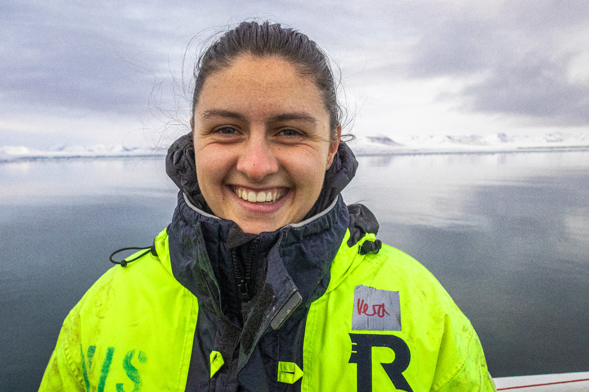

Welcome! This is where I share some of my work through the lens of an oceanography PhD student and my camera.
Hi! My name is Vera and I am an oceanography PhD student at University of Hawaiʻi at Mānoa interested in understanding the physical processes of climate variability in the tropical Pacific. ... current decadal, past ...
My research combines numerical modeling, observations, ... to investigate ...
Outside of research, I use photography as another way of observing the world around me, looking for patterns, special angles and interesting light.

Description of your current research, questions, methods, and what you are hoping to understand.
Description of another current research topic, including relevant modeling, observations, or climate processes.
Description of a previous project, thesis, paper, field campaign, or other research experience.
Add another past research project here.
Photography is another way I explore and document the environments that I study. This space will eventually showcase selected work.